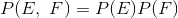
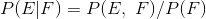
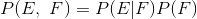
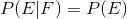
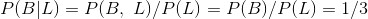

6.2 条件概率
如果事件 E 与事件 F 独立，那么定义式如下：

如果两者不一定独立（并且 F 的概率不为零），那么 E 关于 F 的条件概率式如下：

条件概率可以理解为，已知 F 发生，E 会发生的概率。
更常用的公式是上式的变形：

如果 E 和 F 独立，则上式应该表示为：

这个数学公式意味着，F 是否发生并不会影响 E 是否发生的概率。
举一个常见的关于一个有两个孩子（性别未知）的家庭的有趣例子。
如果我们假设：
(1) 每个孩子是男孩和是女孩的概率相同
(2) 第二个孩子的性别概率与第一个孩子的性别概率独立
那么，事件“没有女孩”的概率是 1/4，事件“一个男孩，一个女孩”的概率为 1/2，事件“两个女孩”的概率为 1/4。
现在，我们的问题是，事件 B “两个孩子都是女孩”关于事件 G “大孩子是女孩”的条件概率是多少？用条件概率的定义式进行计算如下：
事件 B 与 G 的交集（“两个孩子都是女孩并且 大孩子是女孩”）刚好是事件 B 本身。（一旦你知道两个孩子都是女孩，那大孩子必然是女孩。）
这个结果大致上符合你的直觉。
我们接着再问，事件“两个孩子都是女孩”关于事件“至少一个孩子是女孩”（L ）的条件概率是多少？出乎意料的是，结果异于前问。
与前问相同的是，事件 B 和事件 L 的交集（“两个孩子都是女孩，并且 至少一个孩子是女孩”）刚好是事件 B 。这意味着：

为什么会有这样的结果？如果你已知至少一个孩子是女孩，那么这个家庭有一个男孩和一个女孩的概率是有两个女孩的两倍。
我们可以通过“生成”许多家庭来验证这个结论：
def random_kid():
return random.choice(["boy", "girl"])
both_girls = 0
older_girl = 0
either_girl = 0
random.seed(0)
for _ in range(10000):
younger = random_kid()
older = random_kid()
if older == "girl":
older_girl += 1
if older == "girl" and younger == "girl":
both_girls += 1
if older == "girl" or younger == "girl":
either_girl += 1
print "P(both | older):", both_girls / older_girl # 0.514 ~ 1/2
print "P(both | either): ", both_girls / either_girl # 0.342 ~ 1/3